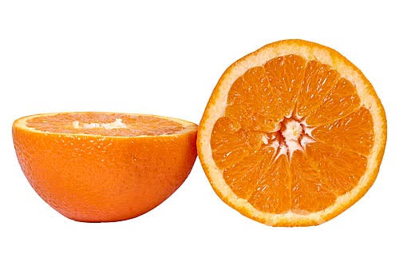

O sumo de laranja natural é algo, como todos sabemos, muito fácil de fazer. É sempre importante escolher bem as laranjas, as que têm mais sumo e sabor.
Após a escolha das laranjas, cortamos cada uma em dois.

De seguida, espreme-se o máximo de sumo possível de cada laranja.

Por fim colocamos o sumo num jarro e aproveitamos.

Pessoalmente, eu gosto de colocar o sumo no frigorífico e aproveitá-lo com a minha família.
| Quantidades | Calorias | Vitamina C |
|---|---|---|
| 1 copo (250ml) | 110 kcal | 240% da dose diária |